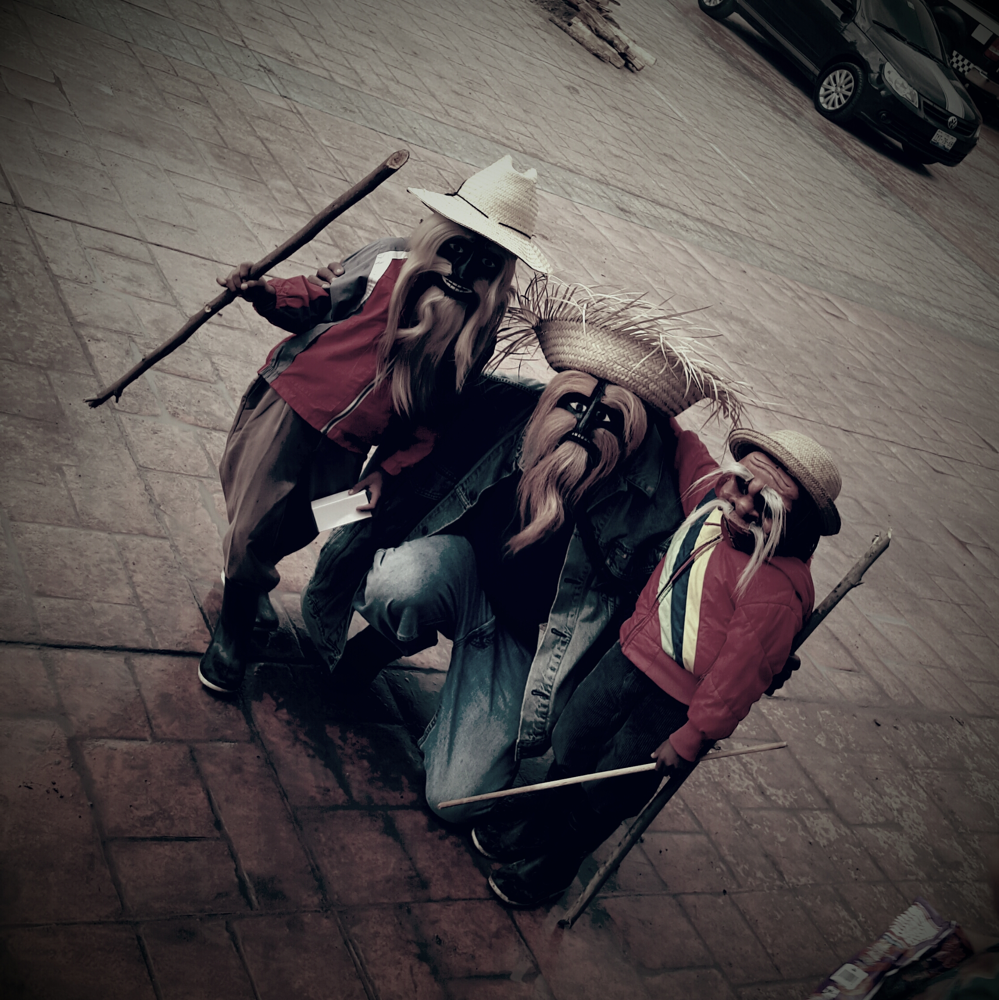
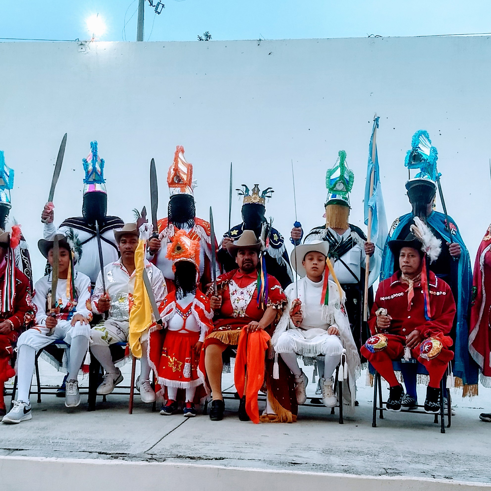
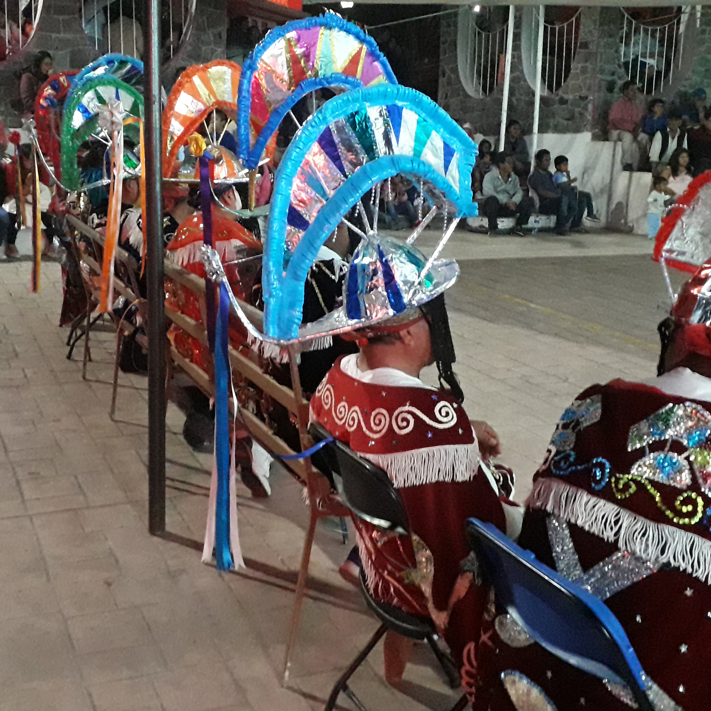

Danza de los Santiagos
La danza de “Santiagos, Moros y Cristianos” de esta población se
desenvuelve durante las festividades de mayordomías entra las que se
encuentran, en orden cronológico de celebración: la mayordomía de
Santa Rosa de lima, el 30 de agosto; la mayordomía de La Natividad,
el 8 de septiembre; y, la mayordomía del Rosario, el 7 de octubre.
Esta danza tiene como Personajes:
Personajes de Moros y Cristianos
| Moros | Cristianos |
|---|---|
| Pilato | Santiago |
| Moro Capitán | Edecán |
| Sultán | Tito |
| Selín | Alférez |
| Alcharéo | Vespasiano |
| Tiberio | Niño |
| Almirante | |
| Gentil |
La danza de "Santiagos, Moros y Cristianos" en Tecomaxtlahuaca es un
reflejo de la rica evolución cultural que ha tenido lugar en este
rincón de México a lo largo de los siglos. Al igual que la danza, la
música que la acompaña ha experimentado cambios significativos y
adaptaciones a lo largo del tiempo.
Las raíces de esta música se encuentran en las danzas europea de
Moros y Cristianos, que originalmente estaban acompañadas por
instrumentos como la dolçaina y el tabal. Sin embargo, con el
tiempo, la música evolucionó, y en 1817 se sustituyeron las
trompetas y tambores por música de viento en sus festividades,
influencia que eventualmente llegó a México y se integró en las
festividades de Moros y Cristianos.
A través del tiempo se ha documentado instrumentos como el
sacabuche, antecedente del trombón, así como la influencia de
instrumentos militares como trompetas, pífanos y tambores.
 La vestimenta e indumentaria de la danza ha ido
cambiando con el
paso del tiempo, de vestir con trajes sencillos e
improvisados a
vestir con trajes muy vistosos y bien adornados.
Los trajes del bando moro son hechos de terciopelo;
portan capa
larga y una pieza de falda conocida como nahuilla. Cada
color del
vestuario va de acuerdo con el personaje.
Esto hace que sea más fácil de diferenciarlos.
Además de usar decoraciones en sus capas con símbolos
que hacen
alusión a emblemas musulmanes (alfanjes, medias lunas,
turbantes,
estrellas, Mahoma) todos ellos bordados de lentejuelas.
Los cristianos llevan una especie de calzoncillo a media
pierna y
una camisa de manga larga de terciopelo; a excepción del
personaje
de Santiago y el Niño quienes visten camisa de manga
larga pero en
vez de calzoncillo portan una falda llamada nahuilla.
La vestimenta e indumentaria de la danza ha ido
cambiando con el
paso del tiempo, de vestir con trajes sencillos e
improvisados a
vestir con trajes muy vistosos y bien adornados.
Los trajes del bando moro son hechos de terciopelo;
portan capa
larga y una pieza de falda conocida como nahuilla. Cada
color del
vestuario va de acuerdo con el personaje.
Esto hace que sea más fácil de diferenciarlos.
Además de usar decoraciones en sus capas con símbolos
que hacen
alusión a emblemas musulmanes (alfanjes, medias lunas,
turbantes,
estrellas, Mahoma) todos ellos bordados de lentejuelas.
Los cristianos llevan una especie de calzoncillo a media
pierna y
una camisa de manga larga de terciopelo; a excepción del
personaje
de Santiago y el Niño quienes visten camisa de manga
larga pero en
vez de calzoncillo portan una falda llamada nahuilla.
 Todos los trajes de los personajes están decorados en la
espalda,
calzoncillos y nahuillas con figuras alusivas a la fe
cristiana
Estos dos últimos personajes portan capa de igual
manera.
Sin olvidar que ambos bandos llevan de lado izquierdo un
machete con
funda cuero.
El personaje de Mahoma se identifica por usar camisa de
vestir,
corbata, saco de vestir color negro, pantalón de vestir
negro,
zapatos y encima de ellos a la altura de la espinilla
unos “tacos”
(especie de polainas que antiguamente se utilizaban para
montar a
caballo); sombrero de palma, con las puntas sin cortar,
tenate de
palma, en donde guarda dulces o algún juguete para
divertir al
público; lleva consigo un bastón o garrote y por último
un petate,
que le será de mucha utilidad al ejemplificar la muerte
de los
moros.
Todos los trajes de los personajes están decorados en la
espalda,
calzoncillos y nahuillas con figuras alusivas a la fe
cristiana
Estos dos últimos personajes portan capa de igual
manera.
Sin olvidar que ambos bandos llevan de lado izquierdo un
machete con
funda cuero.
El personaje de Mahoma se identifica por usar camisa de
vestir,
corbata, saco de vestir color negro, pantalón de vestir
negro,
zapatos y encima de ellos a la altura de la espinilla
unos “tacos”
(especie de polainas que antiguamente se utilizaban para
montar a
caballo); sombrero de palma, con las puntas sin cortar,
tenate de
palma, en donde guarda dulces o algún juguete para
divertir al
público; lleva consigo un bastón o garrote y por último
un petate,
que le será de mucha utilidad al ejemplificar la muerte
de los
moros.

Mahoma en la danza de “Santiagos, Moros y Cristianos”,
es un
personaje teologico, esta figura es la representación
del Dios de
los Moros, insertado en
la trama de danza-teatro de manera mítica para
ejemplificar la
falsedad de una doctrina religiosa sobreponiendo la
religión
católica ante él.
Con la presencia de este personaje en la danza de
“Santiagos, Moros
y Cristianos” se logra relacionar claramente el origen
europeo de la
representación, aludiendo a la ocupación musulmana en
territorio
español y las embajadas cristianas de este imperio para
recuperar su
territorio.

